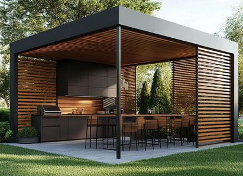
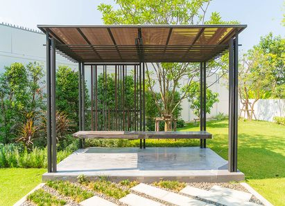

Содержание статьи
Современные навесы: технологии XXI века на защите от солнца и непогоды
Если вы ищете современный навес для террасы или сада, то наверняка уже запутались: сегодня их великое множество – от самых простых деревянных конструкций до зимних садов. В этой статье мы закроем все ваши вопросы!
Раньше навесы были простыми металлическими козырьками с настилом из шифера, профнастила или поликарбоната – традиционные материалы со своими преимуществами и недостатками. Сегодня же архитектурные решения шагнули далеко вперёд, предлагая более современные, надёжные и элегантные решения.
В топе современных навесов сейчас представлены:
Перголы

Главный тренд. Стильная алюминиевая конструкция с регулируемой крышей (ламели, тент, раздвижная система или утеплённые сэндвич-панели). Может быть с остеклением, подсветкой, автоматикой и т.д. Универсальный навес для дома, сада, бассейна, ресторана.
Маркизы
Лёгкие раздвижные системы из ткани, чаще используются для окон и небольших террас. Отлично защищают от солнца и добавляют уюта. Подходят для «европейского балконного стиля», летних веранд, и не только!
Зимний сад
Закрытая конструкция из стекла и алюминия. Полноценная комната с естественным светом, где можно отдыхать круглый год. Это навес и архитектурный элемент одновременно.
Пергола – почему это тренд номер один?
Пергола по своей сути это умная, стильная и долговечная конструкция, которая делает пространство не просто защищённым, а по-настоящему современным. Её алюминиевый каркас очень прочный, обладает отличными антикоррозийными свойствами. Такой навес выдержит любые осадки и ветер, сохраняя презентабельный вид.
Этот элемент пришёл к нам из Средиземноморья, где он веками служил символом уюта и гармонии. Пергола превращает любое пространство в стильную зону отдыха: защищает от солнца и дождя, открывается и закрывается одним движением, а ещё выглядит так, что хочется фотографировать и хвастаться соседям. Именно поэтому сегодня, когда человек ищет «современный навес», чаще всего речь идёт именно о ней.
Мы в компании LuxSunlife предлагаем перголы для дачи, террасы, коттеджа или для ресторана в следующем исполнении:
Биоклиматическая пергола
Ваш персональный контроль над погодой: поворотные или сдвижные ламели регулируют освещение и циркуляцию воздуха, подсветка и ZIP-экраны добавляют комфорта и функциональности
Тентовая пергола
Лёгкая и практичная: идеальна для летних веранд или кафе, легко раскладывается, защищая от солнца и дождя
Зимний сад
Уют с гарантией: стеклянные стены и крыша, регулируемые микроклимат и освещение – место для отдыха 365 дней в году
пергола с сэндвич-панелями
Надёжная всесезонная защита. Крыша из сэндвич-панелей обеспечивает тепло- и шумоизоляцию, выдерживает снеговые нагрузки. Идеальна для использования круглый год.
Чем пергола отличается от обычного навеса?
Классический навес – это утилитарная конструкция с простой задачей: защищать от дождя и создавать тень. Причём простые материалы, из которых он изготовлен, со временем портятся и теряют вид. Пергола же – это универсальное пространство для жизни, работы и отдыха:
Пергола

Выглядит стильно и премиально
Может быть с подсветкой, остеклением, защитными кранами от насекомых
Органично вписывается в любой современный архитектурный стиль и дополняет существующие постройки
Долговечна: металлический каркас на основе алюминиевых сплавов не боится солнца и мороза, не ржавеет и не гниёт от дождя, не гнётся при сильных порывах ветра
Алюминиевые ламели крыши регулируются – одним движением можно открыть небо или полностью закрыться от дождя
Обычный навес

Часто воспринимается как временная или сугубо утилитарная конструкция
Во многих решениях не предусмотрены подсветка, остекление и системы защиты от насекомых, поэтому пространство остаётся менее комфортным
Типовые конструкции могут выбиваться из общего стиля и выглядеть как отдельный, чужеродный элемент на участке.
Типовые конструкции могут выбиваться из общего стиля и выглядеть как отдельный, чужеродный элемент на участке.
Статичная кровля не позволяет регулировать свет, тень и вентиляцию, а также быстро адаптироваться к перемене погоды
По сути, пергола – это стиль, технологии и комфорт в одной конструкции. Ощущение «европейского уровня» у себя во дворе. Не зря именно ее всё чаще можно встретить в лучших отелях, ресторанах и современных домах.
Каковы же ее самые популярные применения?
Частный дом или коттедж: уютная тень на участке, защита террасы от палящего солнца
Навес для автомобиля
Лаундж-зона возле бассейна с креслами или диванчиком
Клиентская зона на террасе кафе или ресторана – создание тени и прохлады для посетителей
Беседка или веранда – навес на свежем воздухе, где особенно приятно устраивать семейные обеды или теплые вечера с друзьями или гостями.
Таким образом, данный вид навеса не только про функциональность, но и про атмосферу. Место, где хочется задержаться, посидеть и почувствовать уют.
Что такое маркизы и зачем они нужны
Маркизы – это такие стильные и современные козырьки, тент из водонепроницаемых нетканых материалов на металлическом каркасе. Они прикрывают террасу, балкон или витрину кафе от палящего солнца и дождя, но делают это так изящно, что соседи начинают завидовать. Представьте: вы сидите на веранде, пьёте лимонад, а солнце палит, как будто его пригласили быть вашим личным светотехником. Маркиза в этот момент – как вежливый охранник на входе в клуб: «Стоп, уважаемое солнце, без фанатизма!».
Плюсы маркиз:
защита от жары и ультрафиолета
укрытие от дождя
Эстетика – фасад дома сразу выглядит богаче и уютнее
Кроме того, система автоматизируема – специальные датчики сами разложат конструкцию при ярком солнце и свернут при сильном ветре, если вдруг вы забудете или у вас не будет возможности
Зимний сад – лето круглый год
Зимний сад – это когда вы говорите: «А давайте приручим природу, но сделаем это красиво и под крышей». По сути, это навес или даже целое помещение со стеклянными стенами и крышей, где можно устроить мини-джунгли или оранжерею. Представьте себе: за окном январь, снег летит как спецэффекты из «Игры престолов», а вы сидите босиком с чашкой чая среди пальм и фикусов. Атмосфера Бали, только без комаров и перелёта.
Зимний сад можно использовать как:
Лаунж-зону (диван, свечи и вечера «как в кино»)
Оранжерею (радовать себя цветами круглый год)
Рабочее место (по видеосвязи вы всегда «на фоне зелени», никакой виртуальный фон не нужен)
Зимний сад подарит вам уют на весь год, независимо от погоды за окном.
Подведем итоги:
Маркизы, зимние сады и перголы – это на сегодняшний день ТОП-3 самых свежих и современных идей для навесов к вашему дому, кафе или ресторану. Компания Luxsunlife создаёт и воплощает ваши желания: реализуем полный цикл от проектирования и производства до монтажа и установки. Вы получаете не просто «навес», а готовое архитектурное решение, которое меняет пространство и повышает ценность вашего дома или заведения.
Маркизы добавляют лёгкости, зимний сад – уюта круглый год, а пергола – функциональности и универсальности, оставаясь главным трендом.
Если вы искали ответ на вопрос: «Как сделать современный навес?» – то ответ прост: обратитесь в Luxsunlife!